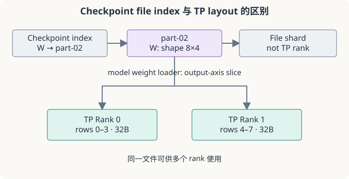
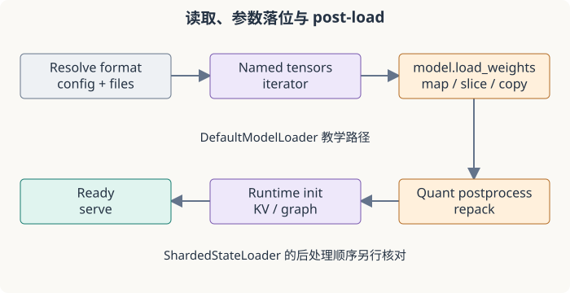

第 47 章 · SGLang 服务生命周期
Model Loading：Checkpoint、Safetensors、Weight Loader 与分片
磁盘 checkpoint 怎样变成各 TP/PP rank 可运行的模型参数，为什么读取 shard 不等于 TP 切分？
磁盘 checkpoint 怎样变成各 TP/PP rank 可运行的模型参数，为什么读取 shard 不等于 TP 切分？ 从具体反例出发，连接算法、工程接口和验收边界。
1. 冷启动不是一次 read()
模型配置决定 architecture、dtype、parallel layout 与 quant method；load format 决定 checkpoint I/O。DefaultModelLoader 选择文件，构建 model parameters，通过 iterator 交给模型的 load_weights；随后必要的 quantization/repacking 和 post-load hook 才形成可执行权重。GPU KV pool、kernel/graph init 仍需完成。与第44章 remote_instance seed 传输不同，本章以本地/仓库 checkpoint 为主。
2. Safetensors 文件与索引
Safetensors 文件头记录 tensor dtype、shape、data_offsets，数据区保存字节；多文件 checkpoint 常有 index 的 weight_map：tensor name → shard filename。它是物理文件定位索引，不是 rank partition metadata。一个文件可含多个参数，一整个参数可能在同一文件但要被多个 TP rank 切片。不要从文件编号推断 layer 或 TP rank。

3. 文件切片与模型并行切片
教学 W∈R^{8×4}，FP16 每元素2 bytes，共64 bytes。若 column-parallel linear 按输出维分2个 rank，各 rank 持有4×4、32 bytes；row-parallel 按输入维切则各8×2，同样32 bytes，但后续通信语义不同。实际 stacked QKV、GQA、EP 及量化 scale 切分依 model-specific weight_loader，不可按 numel 随意 reshape。
4. 从 iterator 到参数落位
safetensors_weights_iterator 在 mmap 路径用 safe_open(device=cpu) 逐 tensor 读取；disable_mmap 路径读整个文件字节再解码。iterator 输出 (name,tensor)，model.load_weights 负责名称映射、stacked parameter dispatch、rank slices 与拷贝。DefaultModelLoader.postprocess_weights 可能量化或 repack；ShardedStateLoader 预先准备目标 layout 并读取对应 rank 的 files，校验遗漏键。两条路径顺序不能混为一谈。

5. 文件预取、并发与峰值内存
mmap 不等于数据零成本驻留；page faults、OS file cache、CPU buffers、H2D 与 device temporary allocations 都可能限制启动。prefetch 与并行读取提高 I/O overlap，却可能提高 host RAM、存储竞争和峰值。假设 retained weights 10 GiB、当前 raw buffer 2 GiB、临时 workspace 1 GiB，则同存至少13 GiB（若在同一 device）；实际 CPU 与 GPU 预算分别记账。layered 路径逐层装载/处理可以减少临时峰值，需验证模型支持。
6. 格式、版本与安全边界
auto/safetensors/pt/npcache/sharded_state/layered/instanttensor 等不能随意互换。预分片状态必须匹配 checkpoint revision、模型配置、TP/PP/EP 布局及量化 metadata。使用可信 checkpoint；PyTorch pickle 类格式与 trust_remote_code 可能引入执行外部代码的风险，safetensors 不代表其整个模型仓库可信。校验源文件完整性、缺键/多键、dtype 与 shape，再做模型输出 sanity test。
7. 如何定位慢启动
分别记录下载/resolve、open/read、tensor conversion、H2D、weight mapping/postprocess、graph capture 与 ready。对冷/热 page cache 分开测量，比较 per-rank read bytes 和峰值 CPU/HBM，避免将缓存预热收益误算为 loader 算法提升。生产使用固定 artifact digest、失败回滚与 readiness，而不是以端口打开代替模型就绪。
8. 交互：选择机制状态与反例
Model Loading 教学实验
文件分片：索引 W → shard-02；两个 TP ranks 都可能读取同一 tensor 文件。
TP 切分：W 8×4 按输出维切：rank0 rows0–3，rank1 rows4–7，每 rank 32B。
预分片格式：rank0/1 读取与自身布局匹配的独立文件；仍要检查 missing keys、版本和 shape。
教学模型仅验证机制与反例，不代表真实 GPU 或集群 benchmark。
9. CPU 最小实验
下载 checkpoint_shards.py，使用标准库运行。源文件包含确定性输出及正反例断言。
python3 examples/checkpoint_shards.py实验是教学抽象，不执行实际模型、网络传输、GPU kernels 或 Kubernetes 部署。
10. 源码阅读路线与证据
固定上游快照 b323e8e6e3aacfe606b11a2ef51ae73bc8b283a7，区分当前实现、工程建议和教学推导。
- How loading works / Load formats：Auto format defaults to safetensors then PyTorch bin; sharded_state and layered formats have distinct loading paths.
- get_model_loader：The loader factory dispatches by load configuration.
- safetensors_weights_iterator：The iterator reads tensors by name, with optional prefetch, mmap or whole-file loading and cache drop.
- load_weights_only / postprocess_weights：Model-specific load_weights consumes the named tensors; quant methods may repack after loading.
- ShardedStateLoader：Pre-sharded loader selects rank-specific files and checks missing state keys.